20 candidates for Emmet's technique library (session 3D, H-26). Each was found in your instruction books and ranked by how widely official models in the LDraw OMR join its key parts (1315 sets mined). Each picture is a render of my sketch of it in Emmet's DSL, which validates with no findings; an accepted sketch becomes the technique, with its tests and render, and a rejected one is dropped. Nothing is taken from the models' files or the books' pages (D-48). Every candidate starts as Accept: switch the ones you don't want, add a note if it helps, then copy your answers and paste them to Claude.
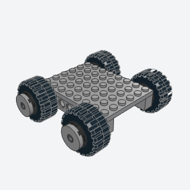
large_display_wheelA road wheel for a large display car, a rim and tire on a Technic pin out of the chassis, with a hubcap pinned into the rim's center.
The first wheel in the library: any vehicle above figure scale needs a road wheel on a pin out of its chassis, with a hubcap.
Note: NEW. The book's 4-stud tire class (11209) and dish hubcap aren't used: among rims that size only 4266 and 55981 carry snap data (56145 and tires 15413, 2857 have none), and 4266's hub has no room for a cap on its axle, so this is rim 55981 (pin holes both sides) with tire 30391, 3.8 studs, and a pin 3/4 holding a round tile 2 x 2 with a hole as the hubcap. The wheel is a submodel; side='right' places it turned half round.
x, y, z, side, rim, capbatch-14/large_display_wheel.py55981 + 30391 + 32002 + 15535 (some of its parts weren't confirmed from the book; I'd pin them when writing it)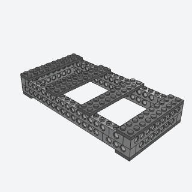
technic_brick_ring_chassisA large car's floor frame, a closed ring of Technic bricks two courses high with its corners lapped course over course, locked by plates across its ends, top and bottom, that axles and pins go through.
The skeleton a large system-brick display car starts from: a stiff floor frame that the wheel pins and axles go through and the body builds on.
Note: VARIANT of technic_spine and spliced_chassis: a closed ring two courses high, sides full length in the first course and ends full width in the second so every corner laps, with tie plates across the top and under the ends.
x, y, z, length, width, color, platebatch-14/technic_brick_ring_chassis.py3702 + 3703 + 3895 + 3700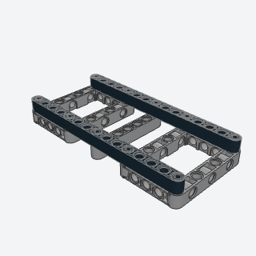
liftarm_ladder_frameA Technic car's main frame, two long beam rails tied by open frames at the ends and a beam across the middle, pinned where they cross, laid flat so the suspension, engine, and seats pin into it.
The base of a Technic Car 1:8 model: two beam rails tied by open frames, which the suspension, engine, and seats pin into.
Note: VARIANT of technic_spine. The books stand the cross-frames upright; this lays everything flat (holes upright, pins upright), which is on the grid. Validator: turned a quarter, frame 64179 takes upright pins only at its corners; a pin in its other short-side holes reads as a collision (its in-plane end holes sit there), so the rails are pinned at the frames' corners.
x, y, z, length, color, cross, pinbatch-14/liftarm_ladder_frame.py64179 + 32278 + 2780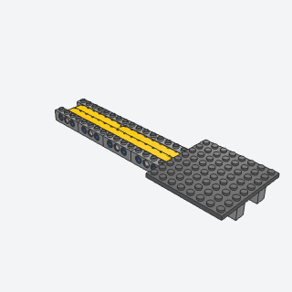
beam_spine_floorA light, stiff spine down a large car's middle, two rows of Technic beams on edge with their joints staggered, pinned between two rows of Technic bricks that carry the floor plates.
A light, stiff central spine for a large system-brick car whose floor plates span across it, when a ring chassis is more than the car needs.
Note: VARIANT of technic_spine. The book splices two beams end to end with beams 7 and 9 over the joint; this uses two rows of beams on edge with their joints staggered, so each beam laps the other row's joint, between rows of Technic bricks pinned through with long pins. floor=None leaves the floor off (the example shows one plate so the spine is visible).
x, y, z, length, color, beam, floor, pinbatch-14/beam_spine_floor.py32278 + 32524 + 6558 + 3701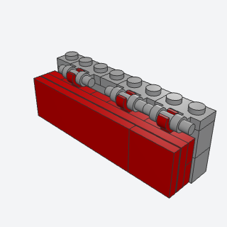
hang_on_side_panelA large car's long, flat, stud-free side, a panel of plates and tiles built on its side that hangs by clips on bars along the body's top edge, so it clicks on and comes off.
Gives a large car long, stud-free sides that click on and come off, the biggest single visual win at display scale.
Note: VARIANT of bracket_side_panel: hung by clips on bars rather than pressed onto bracket studs. Validator: a clip that isn't centered on the bar collides with the handle's posts (61252 and 4081b, each half a stud off 2540's bar center, gave collisions), so the clip is 11476, a 1 x 2 plate with the clip in its middle, over 2540's middle.
x, y, z, length, color, panelbatch-14/hang_on_side_panel.py2540 + 11476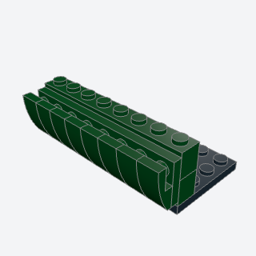
rolled_sillThe smooth, rolled lower edge of a classic car's side, a row of curved slopes on a plate stood on side studs, thick at the top and rolling in to nothing at the bottom.
The rolled lower edge of a classic car's side: a cheap sub-assembly with a big effect on the side profile.
Note: NEW, a sibling of bracket_side_panel. The book's strip is a plate 1 x 12 with six curved slopes; this stands a plate 2 x n on side studs with a curved slope 2 x 1 on each stud column, thick end up, so the side bulges out at the top and rolls in to nothing at the bottom.
x, y, z, length, colorbatch-14/rolled_sill.py11477 + 30414 (some of its parts weren't confirmed from the book; I'd pin them when writing it)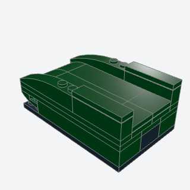
fender_crownThe hood and front fenders of a classic sports car, the fenders riding higher than the hood and both rolling down to a small nose in curved slopes, with inverted curves under the nose for the bottom of the roll.
Makes a large classic car's hood and front fenders curve down to the nose instead of stepping.
Note: VARIANT of curved_hood: the fenders ride higher than the hood and both roll down to the nose, with inverted curves under it. It's a submodel because the inverted slopes under the nose can't go in after the body below. The hinge is separate (front_hinged_bonnet).
x, y, z, length, width, colorbatch-14/fender_crown.py42022 + 15068 + 24201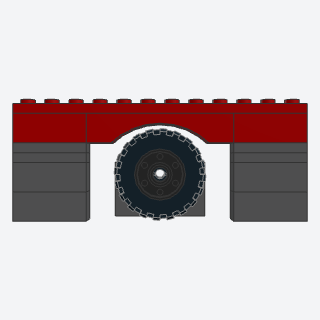
inverted_arch_wheel_wellA clean, round-topped wheel arch in a large car's side, an arch 1 x 6 hung under a long plate over each wheel, the strip that forms the side's lower edge.
A clean round wheel arch from one part in a large car's side, the strip the side builds up from.
Note: NEW. The arch is the right way up, hung from the plates over it (the name follows the book, which builds the strip upside down). A tire 3.8 studs across clears the opening; the example shows one under it. 3455 isn't made in Dark Green, so the default is Red.
x, y, z, length, wheels, raised, colorbatch-14/inverted_arch_wheel_well.py3455 + 92950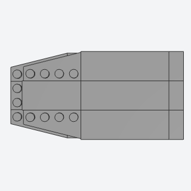
tapered_deckA wedge-shaped car deck that narrows toward the nose in plan, two layers of plates with wing plates at the nose whose slanted edges sit a stud apart, so the outline steps in at a slant without visible steps.
Tapers a car body's outline in plan toward the nose without visible steps.
Note: NEW. Two layers of plates with a left and right wing 2 x 4 at the nose, the second a stud further back, so the slants step in a quarter stud. The wings' studs are left showing (no wedge tiles that size in the library).
x, y, z, length, width, colorbatch-14/tapered_deck.py41769a + 41770a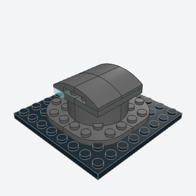
canopy_humpA rounded, bulging cockpit hump on a car's top, layers of round-cornered plates and bricks each smaller than the one under it, a slit window across its front, and curved slopes rolling it off front and back.
A rounded cockpit hump or turret on a large sci-fi or armored car's top that lifts off to show the seat.
Note: NEW. Layers of round-cornered plates and bricks, each smaller, a slit window of two trans plates (a generic stand-in for the book's printed tile), curved slopes front and back. A submodel on studs. The example uses Dark Bluish Gray so it shows.
x, y, z, color, windowbatch-14/canopy_hump.py30357 + 85080 + 15068 (some of its parts weren't confirmed from the book; I'd pin them when writing it)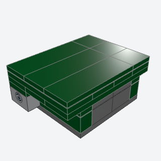
front_hinged_bonnetA large car's hood built as its own sub-assembly that pivots on two Technic pins in line, at the nose or at the windscreen, so it tips up to show the engine.
The right hood hinge for large and 1:8 cars: the hood as its own sub-assembly on two Technic pins, at the nose or the windscreen.
Note: VARIANT of tilting_hood, which uses hinge bricks 3937/6134 (a town-truck hinge); none of the large books hinge a hood that way. The hood is a submodel, two layers of plates with crossed seams, a stud wider than the body each side, with Technic bricks hanging under it onto pins in the body's Technic bricks. The body under it must be tiled first.
x, y, z, length, width, hinge, color, framebatch-14/front_hinged_bonnet.py3700 + 2780 (some of its parts weren't confirmed from the book; I'd pin them when writing it)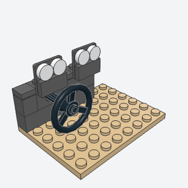
dashboard_and_wheelA large car's dashboard, a ledge of bricks across the cabin with dials on brackets facing the driver, and the steering wheel on an axle through a Technic brick in the ledge.
The dashboard of a large car's cabin, with dials facing the driver and the steering wheel on its column.
Note: VARIANT of control_console and cab_seat. Printed gauge tiles are replaced by plain round tiles as dials. The column is level (on the grid), an axle 3 through a Technic brick in the ledge's upper course.
x, y, z, width, driver, color, dial, wheelbatch-14/dashboard_and_wheel.py2819 + 99207 + 98138 + 3700 (some of its parts weren't confirmed from the book; I'd pin them when writing it)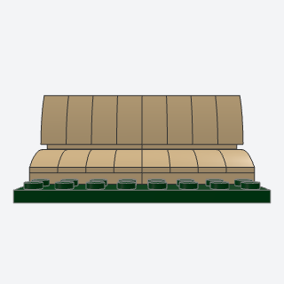
pleated_seatA classic car's bucket or bench seat with rolled, pleated upholstery, curved slopes side by side for the cushion and the same stood up on side studs for the backrest.
A cheap, convincing pleated seat for any large car's interior, placed twice as a submodel.
Note: NEW (interior). The book stands the backrest on a hinge or bracket; this stands it on a brick with side studs. width 4 is a bucket seat, 8 a bench. Shown from the front (left view): the iso view looks at the seats' backs.
x, y, z, width, colorbatch-14/pleated_seat.py11477 + 30414 (some of its parts weren't confirmed from the book; I'd pin them when writing it)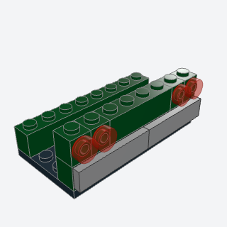
round_tail_light_clusterA classic car's small round tail lights in pairs at each corner of the rear panel, on bricks with a stud on the side, over a silver bumper of tiles on side studs.
Small round tail lights in pairs at the corners of a classic car's rear, over a silver bumper.
Note: VARIANT of tail_lights (larger scale, two lights a corner). The bumper is tiles 1 x 4 on side studs, not the book's bar or curved piece. Metallic Silver renders nearly black, so the bumper defaults to Pearl Light Gray.
x, y, z, width, lights, color, lamp, bumperbatch-14/round_tail_light_cluster.py87087 + 98138 + 30414 (some of its parts weren't confirmed from the book; I'd pin them when writing it)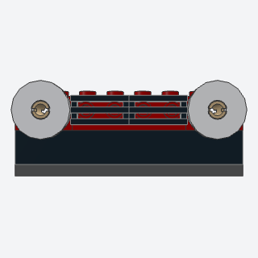
ring_light_grilleAn off-roader's flat front at 1:8, a dark tiled grille between two round headlights 2 studs across, each a ring tile on a Technic pin in a brick's hole.
Corrects the scale of headlights and grille at 1:8: 2-stud ring lights on pins either side of a grille.
Note: VARIANT of headlights and front_grille at 1:8. No printed parts: the book's printed grille tile is grille tiles 1 x 2 on side studs. Shown from the front (left view).
x, y, z, width, color, grille, ringbatch-14/ring_light_grille.py15535 + 32002 + 3700 (some of its parts weren't confirmed from the book; I'd pin them when writing it)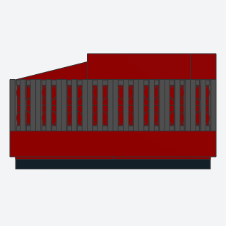
side_vent_grilleA supercar's or superbike's side radiator vent, a panel built flat with a wing plate for its raked outline and a field of grille tiles inside a border in the body color, then stood on side studs.
A supercar's or superbike's side radiator vent, a raked panel of grille slats in a body-color border.
Note: NEW (VARIANT of wall_vent). The book pins the panel on; this stands it on side studs with Rot(x=90) as a submodel. The grille tiles stand across the two middle rows so they tie the panel's halves (laid along the rows, the upper half floated). The wing's own studs show at the raked end.
x, y, z, length, color, grillebatch-14/side_vent_grille.py2412b + 41769a + 30414 (some of its parts weren't confirmed from the book; I'd pin them when writing it)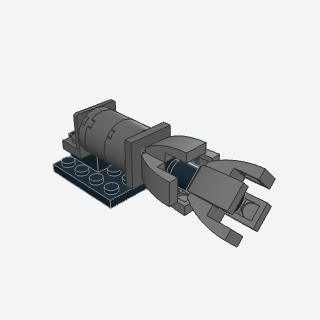
flared_exhaustA big round rear exhaust or jet nozzle with a flared, petaled rim, eight curved slopes standing out round a core on bricks with studs on four sides, the second four turned 45° on a single stud.
A big round rear exhaust or jet nozzle with a petaled flare, for sci-fi and armored display cars.
Note: VARIANT of engine_nozzle. The book's petals stand on clips at an outward tilt; this keeps them on studs: four curved slopes on a brick with studs on four sides, and four on a second one turned 45° on a single stud (validates clean). The two rings sit a brick apart, since 4 + 4 on adjacent bricks collide. At this size it reads a little like a claw. The nozzle is built upright as a submodel and laid on its side on a bracket.
x, y, z, color, petal, corebatch-14/flared_exhaust.py4733 + 11477 + 99207 (some of its parts weren't confirmed from the book; I'd pin them when writing it)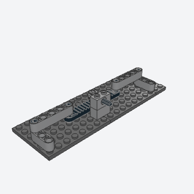
steering_rackWorking rack-and-pinion steering, a gear rack that slides crosswise when the column turns, with a tie rod pinned to each end that swings a steering arm on its pivot, so both front wheels steer together.
The working steering Car 1:8 promises: a rack slid by a pinion on the column, tie rods to steering arms.
Note: REPLACES the ball joints with pins: towball pin 6628 has no pin connector, steering links 32005 and 2739a have no ball sockets, and 32170 has only its ball, so a ball-joint linkage floats. Here the tie rods are beams 5 on friction pins, and each steering arm (a beam 3) turns on the single stud of a round plate. The rack and tie rods are a submodel, so their pins go in from above. The pinion clears the rack's teeth by 0.4 LDU; gear mesh isn't checked by the validator.
x, y, z, color, rack, pinbatch-14/steering_rack.py6630 + 3647 + 32316 + 32523 (some of its parts weren't confirmed from the book; I'd pin them when writing it)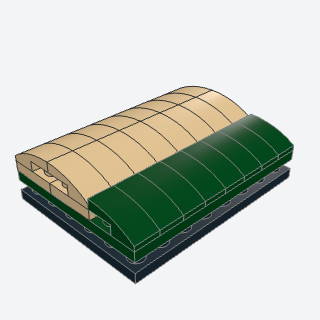
removable_soft_topA roadster's rear deck with its folded soft top on it, built as one unit that sits on two locating studs behind the cabin and lifts off.
The lift-off rear deck and folded soft top of a roadster, built behind the cabin.
Note: ALTERNATE, in place of double_wishbone_suspension (dropped: triangular suspension arm 5294 has no connector data, and the shock absorbers' ends are partial, so a wishbone would float). VARIANT of lift_off_roof_seat: the book locates the deck on two Technic pins; this sets it on two round plates' studs.
x, y, z, width, color, topbatch-14/removable_soft_top.py11477 + 6141 (some of its parts weren't confirmed from the book; I'd pin them when writing it)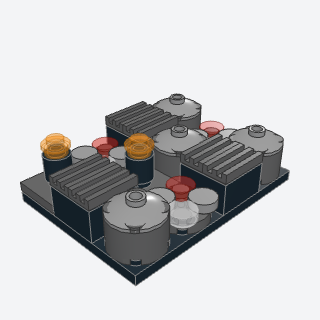
engine_bay_greeblesA busy, believable engine bay for a large car, a seeded mix of small units on a 2-stud grid: round cylinders with dish caps, coils topped with lights, grilled boxes, and clusters of round tiles.
Fills a large car's engine bay with a believable, seeded mix of cylinders, coils, boxes, and lights.
Note: ALTERNATE, in place of v_engine_pistons (dropped: the crankshaft pieces 2853a and 2854 carry no snap lines of their own, so the con rods' big ends have nothing to mate and the V would validate only by allowance). VARIANT of greeble_strip. The book's hoses and bent bars are left out (flex parts).
x, y, z, length, width, seed, color, metalbatch-14/engine_bay_greebles.py3941 + 4740 + 87580 + 2412b (some of its parts weren't confirmed from the book; I'd pin them when writing it)